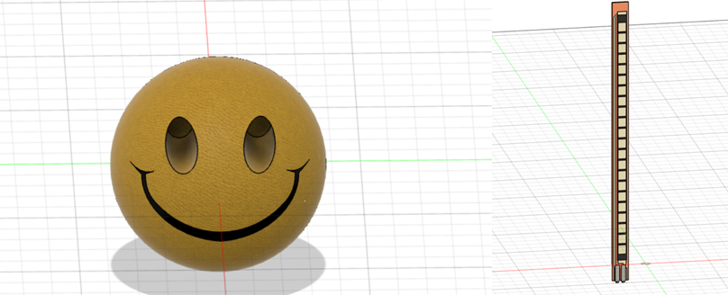

Week 4
Translating Affordances - The Smiley Project
The Idea
We always talk about how "Emotion management" or rather taking care of mental space is so important in the long run. My idea is to take one aspect of our emotion and be able to physically express it and channel into a digital medium.I focused mainly on frustration and "anger fits" that we all get every now and then.Imagine a squishy stress ball that you can squish/compress and use that to take all your frustration out. Now imagine this ball can read the levels of your frustration, based on the intensity and the speed of how One squishes it. This would in theory allow one to express their frustration in the physical world and see the levels of their frustration using a digital media (a meter on display).This "data" can then further be used to reccommend correct relaxing outlets to the person using it.
Planning and research
While searching for a medium to express frustration i immediately thought of smiley stress ball.In a sense this ball absorbs all your stress and anger onto itself and relieve you of any mental anguish.Next Thing i required was something to read the compression of the ball. After searching for a bit i found out this "flex" sensor that can measure any change in it's shape (any sort of bend or deformation) by changing it's resistance accordingly. So my plan is to mount this sensor on the outside of this ball kind of encapsulating the ball and then we can pipe the data from the sensor into MCU unit that further converts it into USB for interfacing with laptops. I chose to design this entire assignment in autoDesk 360 fusion which is a CAD software tool.
The Design
I started off with designing the squishy ball and the flex sensor in CAD and ended up with these designs.
Next challenge was to combine the sensor with the ball, in a way that it follows the circular edge of the ball. Now this is particularly tricky as their is no option to create "Flexible components in Fusion 360. I solved this problem my cutting the veritcal sensor in 5 peices then using those 5 pieces to kind of draw a tangent to ball. Lastly i combines these tangents using curved edges. In real life this sensor is much more flexible and can bend around the ball pretty easily.
Next i grabbed a realistic design of a macbook pro from the internet and started combining everything together.
After combining everything in fusion 360 i appilied the proper materials onto each element (sponge for smiley ball, metal for laptop , plastic for the USB cable) and rendered the entire design. The results are shown.
Conclusion
After staring at this design for more than 2 hours (i really did), i really wanted to make this a real live project. One of the problems that i think would've occured is the fact that the sensor might hinder the "squishyness of the ball" and hence provide a not so good user experience.I believe if i can get this sensor inside the ball somehow that'll do the trick. Other than that i think using a simple ESP32 Microcontroller could also convert this ball into a wireless interface that can be used with even a smartphone ! I plan to build this in the summer break. In conclusion i really enjoyed this project because of its connection with real emotions and the physical world.